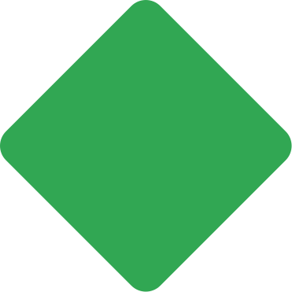

<link rel="import" href="chrome://resources/html/polymer.html">

<dom-module id="onboarding-background">
  <template>
    <style>
      @keyframes blue-circle-anim-x {
        50% {
          animation-timing-function: cubic-bezier(0.4, 0, 0.2, 1);
          transform: translateX(44px);
        }
      }

      @keyframes blue-circle-anim-y {
        50% {
          animation-timing-function: cubic-bezier(0.55, 0, 0.2, 1);
          transform: translateY(17px);
        }
      }

      @keyframes green-rectangle-anim {
        100% {
          transform: rotate(360deg);
        }
      }

      @keyframes red-triangle-anim {
        50% {
          animation-timing-function: cubic-bezier(0.4, 0, 0.2, 1);
          transform: translateY(25px) rotate(-53deg);
        }
      }

      @keyframes yellow-semicircle-anim {
        40% {
          animation-timing-function: cubic-bezier(0.4, 0, 0.2, 1);
          transform: translateY(40px) rotate(-1deg);
        }
      }

      @keyframes grey-rounded-rectangle-anim {
        65% {
          animation-timing-function: cubic-bezier(0.4, 0, 0.2, 1);
          transform: translateY(-48px) rotate(-75deg);
        }
      }

      :host {
        bottom: 0;
        left: 0;
        margin: auto;
        overflow: hidden;
        position: absolute;
        right: 0;
        top: 0;
        z-index: -1;
      }

      /* The container is necessary in order for :host to hide overflowing SVGs
         correctly without disturbing their positions. */
      #container {
        height: 100%;
        left: 50%;
        min-height: 700px;
        min-width: 1024px;
        position: absolute;
        top: 50%;
        transform: translate(-50%, -50%);
        width: 100%;
      }

      img,
      span {
        position: absolute;
      }

      #blue-circle-container {
        animation: blue-circle-anim-x 9s cubic-bezier(0.4, 0, 0.2, 1) infinite;
        left: calc(13% - 50px);  /* Relative to #yellow-dots. */
        top: calc(18% - 26px);  /* Relative to #yellow-dots. */
      }

      #blue-circle-container::after {
        animation: blue-circle-anim-y 9s cubic-bezier(0.25, 0, 0.2, 1) infinite;
        content: url(../images/background_svgs/blue_circle.svg);
        position: absolute;
      }

      #yellow-dots {
        left: 13%;
        top: 18%;
      }

      #grey-rounded-rectangle {
        animation: grey-rounded-rectangle-anim 10s cubic-bezier(0.4, 0, 0.2, 1)
            infinite;
        left: -42px;
        top: 45%;
      }

      #red-triangle {
        animation: red-triangle-anim 9.6s cubic-bezier(0.4, 0, 0.2, 1) infinite;
        bottom: 15%;
        left: 12%;
      }

      #yellow-semicircle {
        animation: yellow-semicircle-anim 10s cubic-bezier(0.4, 0, 0.2, 1)
            infinite;
        right: 28.5%;
        top: -50px;
        transform: rotate(-7deg);
      }

      #green-rectangle {
        animation: green-rectangle-anim 40s infinite linear;
        bottom: 8%;
        right: -255px;
      }

      #grey-oval {
        bottom: calc(8% + 24px);  /* Relative to green-rectangle. */
        mix-blend-mode: multiply;
        right: 48px;
      }
    </style>
    <div id="container">
      <!-- Using span as container for an :after element that actually contains
           the blue-circle svg, because the animation needs to curve so x and y
           needs to be animated separately. -->
      <span id="blue-circle-container"></span>
      
      
      
      
      
      
    </div>
  </template>
  <script src="onboarding_background.js"></script>
</dom-module>
